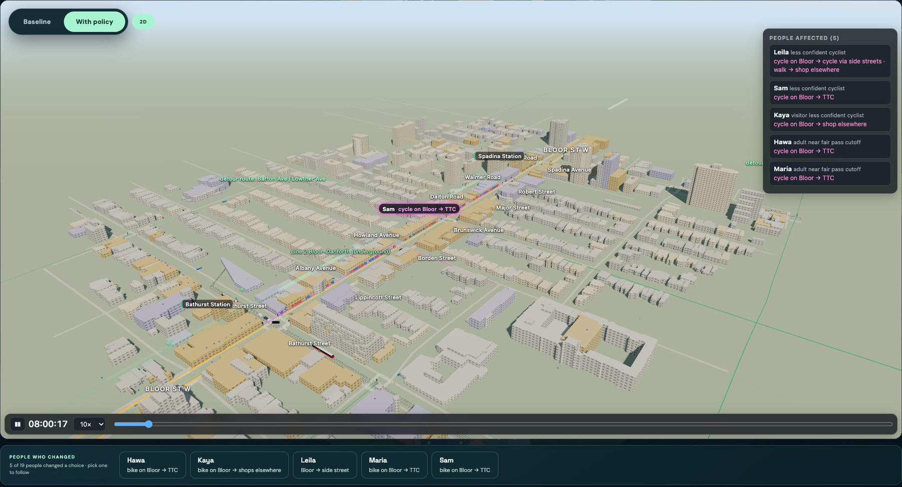
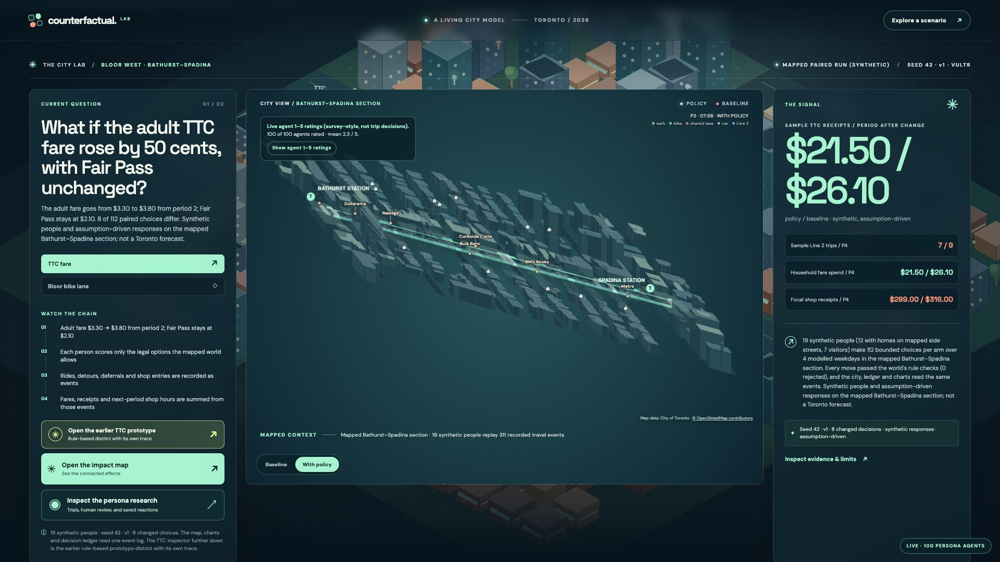

Toronto · Bloor St W
What if?
Decided on gut feel. Nobody can test them first.
Sources: City of Toronto 2024 supplemental report, pp. 1, 12–13 (bloor-bike-demo.md, B07) · TTC 2026 operating budget, p. 9 (data/ttc_fare_context.json)
Counterfactual Lab
Ask a city what if.
Type a policy. We generate the people it affects, put them on a real, rule-checked map of Bloor Street, and run the city twice.
Type a policy
Any question, in plain words.
Generate the people
Homes, trips, budgets, and reasons.
Run the city twice
Baseline vs policy, same people, same seed.
See every choice, every dollar
…and what we can’t know.
Steven · Persona autoresearch
Agents that research how to be human
Ask an LLM to “act like a cyclist” and you get a stereotype. So an agent tunes our persona instructions against real people.
Stopped when the gains fell below the noise.
Scored against real survey respondents.
Source: persona-swarm/autoresearch/results.tsv (rounds 001–010; kept 003 and 009) · Claude Haiku persona agents, no weights trained
Steven · Final set, scored once
Scored once on 100 people it had never seen
81%
get the right person’s answer.
Beats all four baselines.
100 of these agents are live in the demo.
Right-person accuracy, 100 unseen Twin-2K-500 respondents, 5,000 survey answers (not travel) · persona-swarm/data/record/final.json
Bloor St W, Bathurst → Spadina
City
Scroll down into Toronto.
Prompt
Remove the Bloor bike lane.
3D
Baseline, then with policy. Same people.
Report
Every number added up from events.

Why this wins
Real Toronto world
- City open data, TTC GTFS and OpenStreetMap
- Game-master rules check every move
- 0 rejected moves
People measured against people
- Haiku agents tuned on Twin-2K-500
- Papiers notes + human sign-off
- 0.808 vs 0.756 with no persona
Runs on Vultr
- Cloud Compute runs the experiments
- GLM compiles any question
- Clef cross-checked 448 decisions, 91% agreement
Test the policy before you test it on people.
Backup
Q&A
Backup · Bike run · period 4, a modelled weekday
Cyclists move. Drivers gain nothing.
The same 19 synthetic people, seed 42. Leila takes a side street; Hawa, Maria and Sam switch to the TTC; Kaya shops elsewhere.
experiment/sample-world-bike.json · by_tick[3], changed_decisions, game_master, set_shop_hours events · synthetic, not a forecast
Backup · Fare run · period 4, a modelled weekday
Adult fare +50¢: Fair Pass riders don’t move

Live site, 17 Oct. Elena drives; Maria and Hawa bike; Grace and Ravi shop elsewhere. All five pay the adult fare.
experiment/sample-world-fare.json · by_tick[3], changed_decisions, set_shop_hours events · 0 rejected moves · synthetic, not a forecast
Backup · Architecture
One question, one run, one event log
VULTR.md · api/README.md · ops/agents-tunnel.md · persona-swarm/RUNTIME.md
Backup · Best Use of Vultr
Four Vultr jobs, with receipts
Hosts the site and runs every experiment
vc2-1c-2gb in Toronto. Paired runs in 2 worker threads, plus bounded assumption sweeps.
Compiles any question
Expected mappings, 2 of them unseen prompts. 0 fallbacks, 7.2 s total, 4,732 tokens.
Second opinion on 448 decisions
340 live calls, 0 errors, ~215 ms median. Both paired sanity checks pass.
Provisions and redeploys from scripts
The inference subscription, the SSH key and the VM. Keys never touch the repo.
Sanity checks: Fair Pass riders, 0 choice changes of 9 paired states · cautious cyclists, 0 moves onto unprotected Bloor of 7 · VULTR.md, experiment/vultr-runs/
Backup · What we don’t claim
A test bench, not a forecast
- 19 synthetic people on a real map. Not Toronto residents.
- Signal timings are assumed (90 s cycle). Counts and geometry are observed.
- Persona tuning measures survey answers, not travel behaviour.
- Gains are small. Round 9 cleared its noise bar by 0.001.
- On new people, policy answers trail simple baselines (0.792 vs 0.810).
- Model choice moves the result: Clef changed 4 bike choices where our rule changed 15.
Not estimable
Marked, not guessed. Every run lists these.
Labelled on every run
world/README.md · persona-swarm/docs/demo.md · VULTR.md · experiment/sample-world-bike.json (not_estimable)
Backup · Tracks
Built for four tracks
Human notes in, human sign-off out
Papiers highlights and notes → the agent’s one edit → scored by code → a typed human review → rescored. Round 7 revoked, round 9 kept after a re-benchmark.
Toronto open data, a real Toronto fight
3D massing, pedestrian and cycling networks, signals, 2025 turning counts and TTC GTFS, on the Bloor lanes the province moved to remove.
The engine room
Cloud Compute hosts and runs every paired experiment. GLM compiles questions. Clef cross-checks every decision. The API provisions it all.
Every dollar, both sides
Household fares, shop receipts and TTC receipts come from the same transactions, so they reconcile. Results split Fair Pass vs adult riders.